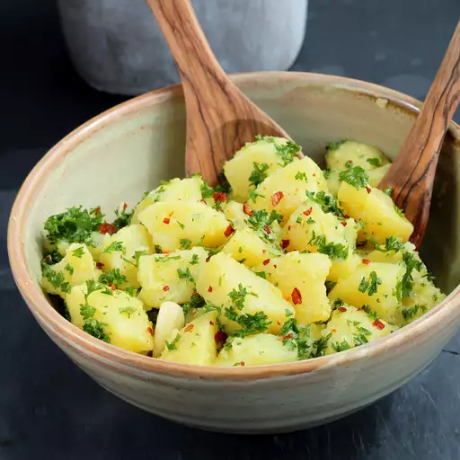

Potato Salad Recipe

An Italian classic, this no-mayo potato salad is packed with big flavors from a garlic-parsley dressing.
Ingredients
- 25 ounces Yukon Gold potatoes
- 1 tablespoon coarse sea salt
- 4 tablespoons extra-virgin olive oil, divided
- 1 tablespoon white wine vinegar
- 2 cloves garlic, peeled and slightly crushed
- 2 green onions (white part only), chopped
- Salt and freshly ground pepper to tast
- 1 teaspoon red pepper flakes
- Boil potatoes: Combine potatoes and salt in a larg pot filled with cold water. Bring to a boil and cook until potatoes are tender, but not mushy (roughly 10 minutes). Drain and set aside until cool enough to handle.
- Prepare dressing: While potatoes are cooking, whisk 3 tablespoons olive oil and the white wine vinegar together. Add the garlic and set aside.
- Cube potatoes: Peel cooked potatoes and cut into 1-inch cubes. Combine potatoes, green onion, and parsley in a bowl. Season with salt and pepper to taste. Drizzle with the dressing and lightly toss, taking care not to break the potatoes.
- Serve: Top with remaining 1 tablespoon of olive oil and red pepper flakes before serving.